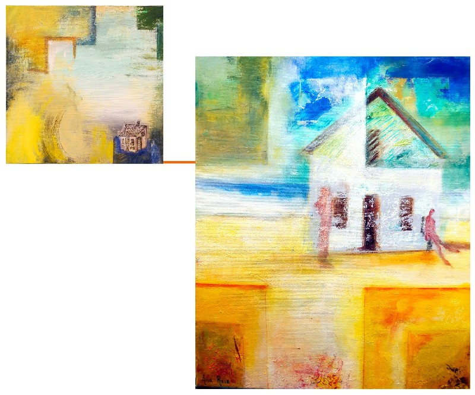
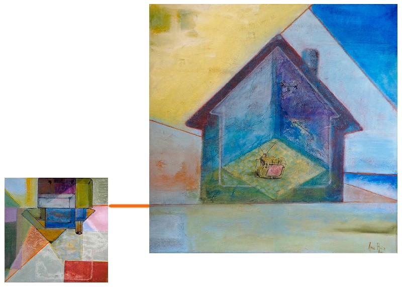

La maison ou le pouvoir de rentrer en soi-même (2012)
La maison est-elle le reflet de notre personnalité qui se construit peu à peu au fil des ans ? Le geste transmis de génération en génération ?
Qui, de nous ou de la maison reflète l'autre ? Qui construit et protège l'autre ?
Parce qu’elle est indissociablement matérielle et immatérielle — maison où l’on vit et maison que l’on porte au fond de soi — la maison nous habite autant que nous l’habitons. C’est pourquoi la perdre revient aussi à se perdre soi‑même : rester enfermé dehors et en dehors de soi, en exil, dépossédé de l’espace intime de vie et du pouvoir de rentrer en soi‑même, séparé de soi et des autres comme un fantôme hanté par la maison disparue.
Un vieux conte traditionnel nous enseigne comment, grâce à notre travail et pourvu que nous soyons prévoyants, nous n’aurons rien à craindre pour la sécurité de la maisonnée, car nous choisirons sagement entre la maison de paille et de ciment, capable de braver le souffle du loup qui peut aisément balayer la maison de paille et secouer fortement la maison de bois qu’elle finit par dégringoler. Mais le loup est devenu bien pire symbole des dangers qui menacent les foyers. Quelle sorte de maison pourra nous protéger, sans faillir, des tempêtes qui soufflent sur notre monde et qui, financièrement, précipitent dans la ruine des populations entières ? Le conte ne le dit pas.
Sur le fil qui relie entre elles toutes les maisons du monde avance opiniâtrement en vacillant une frêle silhouette. Serait‑ce un hidalgo funambule que la force d’un noble et généreux idéal empêche de tomber et pousse envers et contre tout à aller de l’avant ? Cherche‑t‑il, de maison en maison, une porte ouverte sur un autre monde où toute maison est le centre de l’univers et où aucune ne sera jamais détruite ? Nous marchons tous sur un fil et, de là‑haut, si nous regardons bien, si nous regardons penchés à la fenêtre du cœur,
Germinal Arcal Palacio
« (…) toutes les maisons apparaissent comme des coques de bateaux joliment colorées sur la mer immense et bleue de l’univers. Fragiles, les petites voiles triangulaires et le mât pointé vers le ciel, elles disent en même temps notre enfermement et notre légèreté, notre gravité et notre vanité. »
(Lydia Devos, La Maison, Le Seuil)
Maison sacrée
Maison Floride

Maison temple

Maison palais prison
« Rentrer dans la maison, c’est peut-être rentrer en soi-même… »